CHAPTER 02 / 로고가 나오는 애니메이션

- 책 : 29페이지
- 예제파일
- 2장 로고가 나오는 애니메이션 만들어보기/2장_완성작
- 동영상 강좌
CHAPTER 03 / 텍스트 애니메이션
3.1 텍스트 입력하기
- 책 : 49페이지
- 예제파일
- 3장 텍스트 애니메이션/3-1 텍스트 입력하기
- 3장 텍스트 애니메이션/3-1 텍스트 입력하기(완성작)
- 동영상 강좌
3.3.1 _ 가장 단순하지만 다양하게 응용할 수 있는 기본 스타일의 자막
- 책 : 57페이지
- 예제파일
- 3장 텍스트 애니메이션/3-3-1 기본 스타일 자막(완성작)
- 동영상 강좌
3.3.2 _ 글자 수에 따라 길이가 조절되는 반응형 자막

- 책 : 64페이지
- 예제파일
- 3장 텍스트 애니메이션/3-3-2 반응형 자막(완성작)
- 동영상 강좌
3.4 키프레임과 비헤이비어로 텍스트 애니메이션 만들기
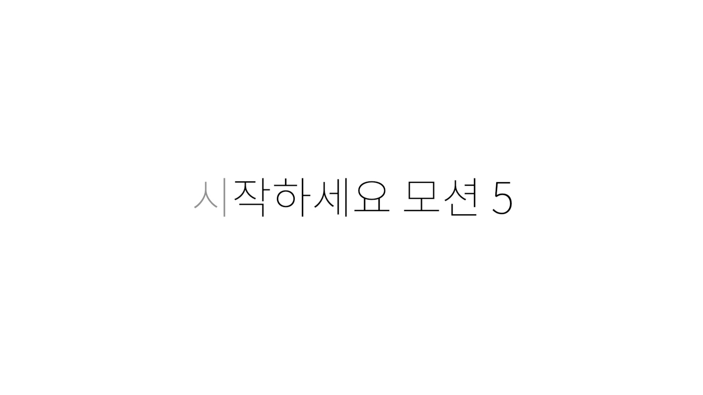- 책 : 71페이지
- 예제파일
- 3장 텍스트 애니메이션/3-4-4 시퀀스 텍스트 비헤이비어(완성작)
CHAPTER 04 / 영상 파일로 출력하기
4.1 템플릿을 이용한 오프닝 영상 출력하기
- 책 : 100페이지
- 예제파일
- 4장 영상 출력하기/4-1 템플릿 프로젝트로 영상 파일 출력하기(완성작)
- 동영상 강좌
4.2 영상 파일의 PNG 버전, 알파 채널 영상 출력하기
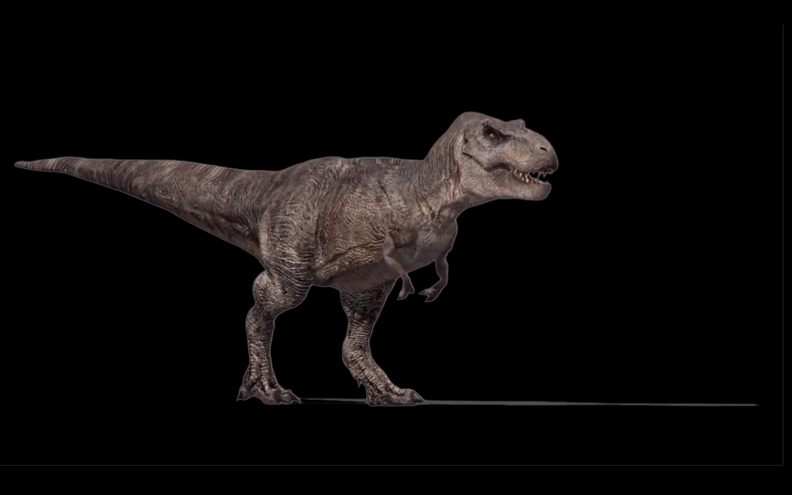- 책 : 100페이지
- 예제파일
- 4장 영상 출력하기/4-2 알파채널 영상만들기
- 4장 영상 출력하기/알파채널 영상_Dinosaur(완성작)
CHAPTER 05 / 파이널 컷 프로 X과 함께 쓰는 모션 5
5.1 검색창 스타일 템플릿 만들기
- 책 : 118페이지
- 예제파일
- 5장 파이널컷프로X과 함께쓰는 모션5/5-1 검색창 스타일 템플릿 만들기(완성작)
- 동영상 강좌
5.2 진행 상태를 확인할 수 있는 템플릿 만들기
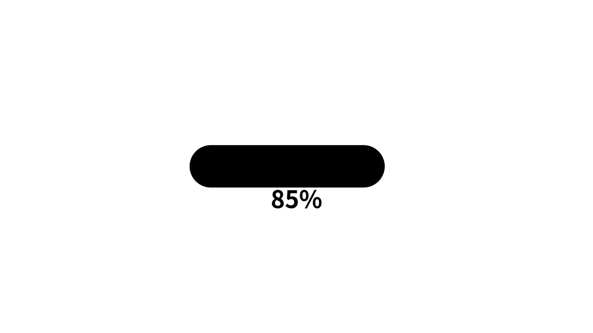- 책 : 150페이지
- 예제파일
- 5장 파이널컷프로X과 함께쓰는 모션5/5-2 진행 상태를 확인하는 템플릿 제작하기(완성작)
- 동영상 강좌
5.3 체크박스와 팝업 위젯을 이용해 업그레이드된 그래프 템플릿 만들기
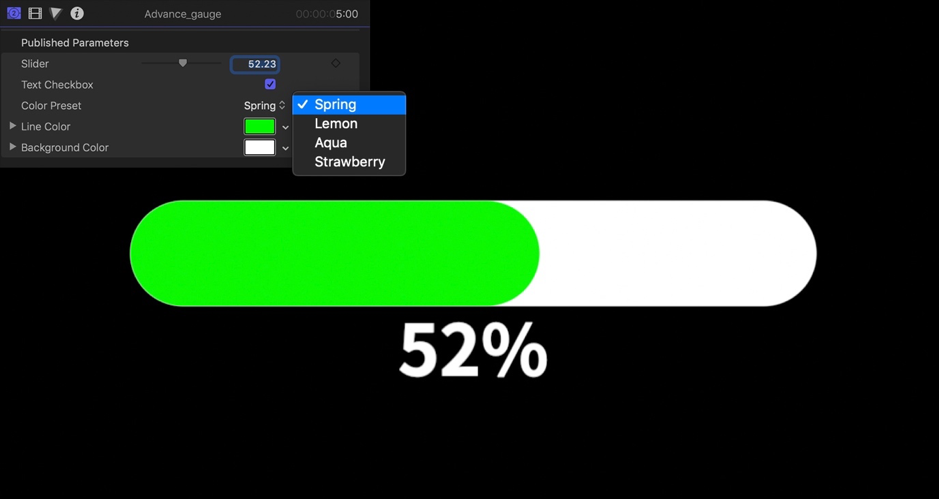- 책 : 161페이지
- 예제파일
- 5장 파이널컷프로X과 함께쓰는 모션5/5-2 진행 상태를 확인하는 템플릿 제작하기(완성작)
- 동영상 강좌
CHAPTER 06 / 키프레임 에디터와 도형 애니메이션
6.1 키프레임 에디터(Keyframe Editor)
- 책 : 175페이지
- 예제파일
- 6장 키프레임 에디터와 도형 애니메이션/6-1 키프레임 예제
- 동영상 강좌
6.2 경로를 나타내는 화살표 애니메이션 만들기
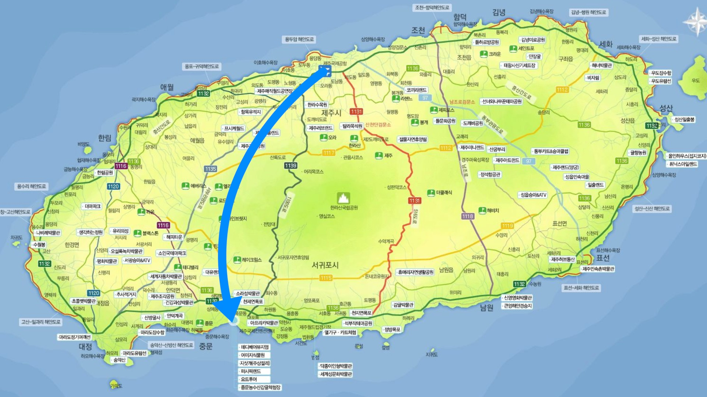- 책 : 184페이지
- 예제파일
- 6장 키프레임 에디터와 도형 애니메이션/6-2 경로를 나타내는 화살표 애니메이션
- 6장 키프레임 에디터와 도형 애니메이션/6-2 경로를 나타내는 화살표 애니메이션(완성작)
- 동영상 강좌
6.3 정보를 알려주는 말풍선(Call-outs) 만들기
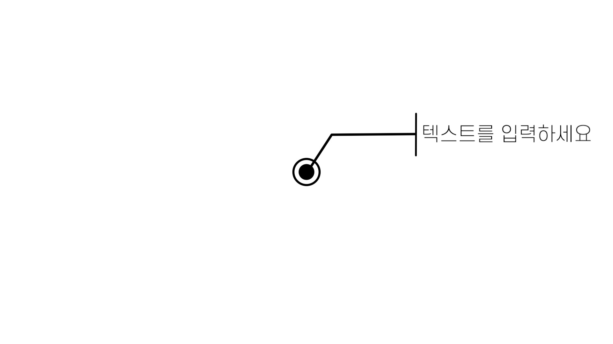- 책 : 194페이지
- 예제파일
- 6장 키프레임 에디터와 도형 애니메이션/6-3 정보를 알려주는 말풍선 만들어보기(완성작)
- 동영상 강좌
6.4 메신저 대화 애니메이션 만들기
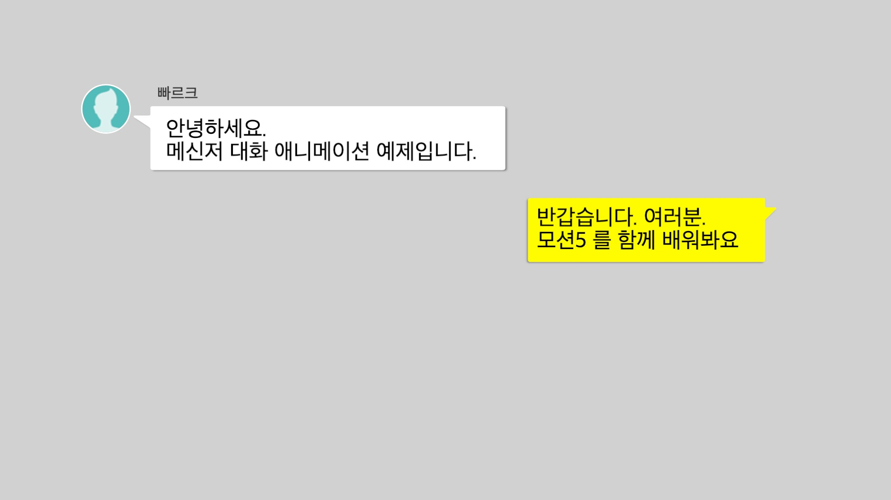- 책 : 217페이지
- 예제파일
- 6장 키프레임 에디터와 도형 애니메이션/6-4 메신저 대화 애니메이션
- 6장 키프레임 에디터와 도형 애니메이션/6-4 메신저 대화 애니메이션(완성작)
- 동영상 강좌
CHAPTER 07 / 모션트래킹과 키잉으로 합성하기
7.1 기본적인 모션트래킹 기법 익히기
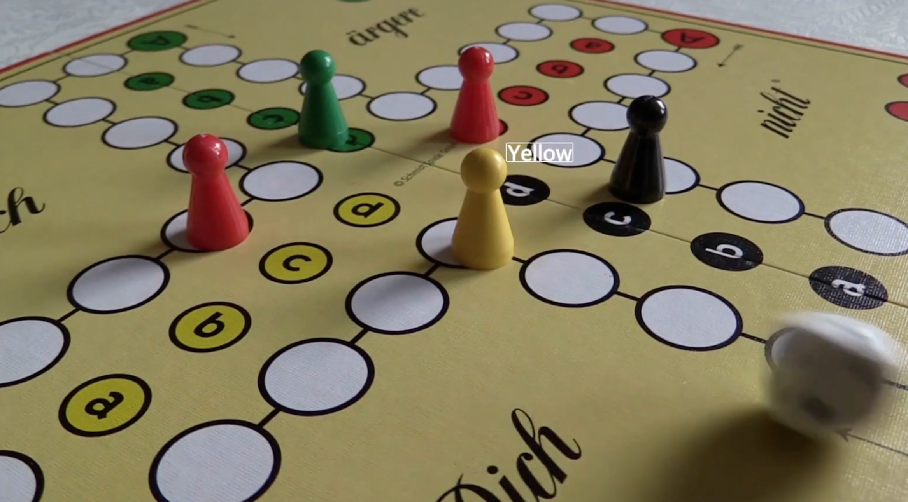- 책 : 234페이지
- 예제파일
- 7장 모션트래킹과 키잉으로 합성하기/7-1 모션트래킹 따라하기
- 동영상 강좌
7.2 두 개 이상의 포인트를 이용한 모션트래킹
- 책 : 239페이지
- 예제파일
- 7장 모션트래킹과 키잉으로 합성하긴/7-2두개의 포인트를 이용한 모션트래킹
- 7장 모션트래킹과 키잉으로 합성하긴/7-2두개의 포인트를 이용한 모션트래킹(완성작)
- 동영상 강좌
7.2 영상의 특정 영역을 흐릿하게 처리하는 무빙 블러(Moving Blur)
- 책 : 243페이지
- 예제파일
- 7장 모션트래킹과 키잉으로 합성하긴/7-2 Moving Blur
- 7장 모션트래킹과 키잉으로 합성하긴/7-2 Moving Blur(완성작)
- 동영상 강좌
7.3 네 개의 포인트를 이용한 트래킹(4 Point Tracking)
- 책 : 251페이지
- 예제파일
- 7장 모션트래킹과 키잉으로 합성하긴/7-3 네개의 포인트를 이용한 모션트래킹
- 7장 모션트래킹과 키잉으로 합성하긴/7-3 네개의 포인트를 이용한 모션트래킹(완성작)
- 동영상 강좌
7.4 키잉으로 영상 합성하기
- 책 : 256페이지
- 예제파일
- 7장 모션트래킹과 키잉으로 합성하긴/7-4 키잉을 이용한 합성
- 7장 모션트래킹과 키잉으로 합성하긴/7-4 키잉을 이용한 합성(완성작)
CHAPTER 08 / 페인트 스트로크와 마스크
8.1 캘리그라피 애니메이션 타이틀 영상 만들기
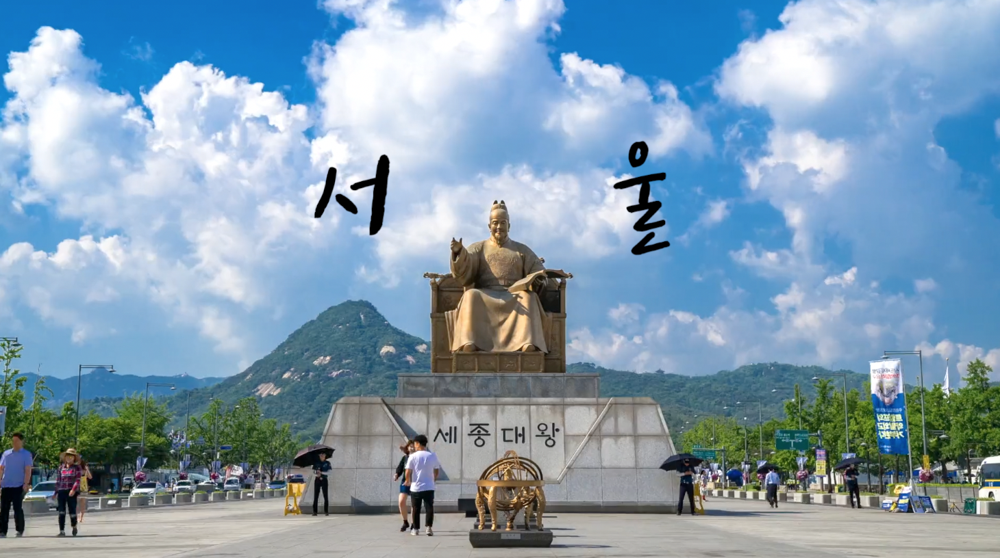- 책 : 267페이지
- 예제파일
- 8장 페인트 선과 마스크/8-1 캘리그라피 애니메이션 타이틀 영상 만들기
8.2 마스크를 활용한 스위치 타이틀
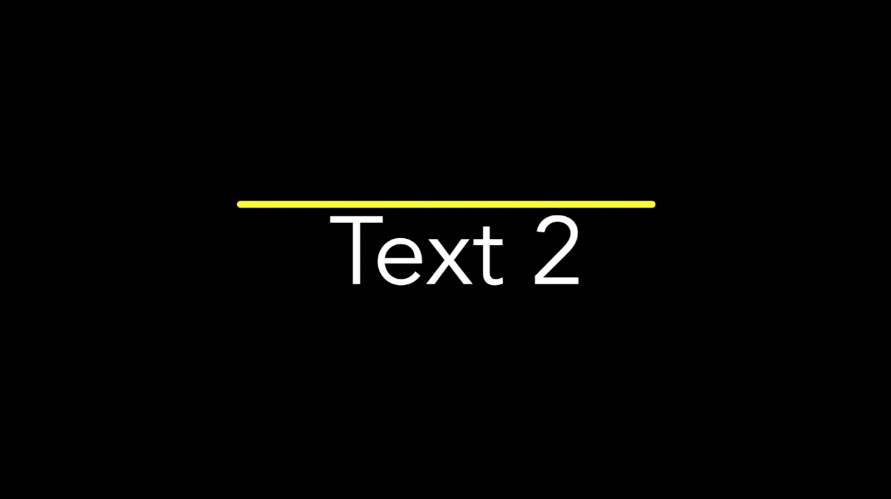- 책 : 277페이지
- 예제파일
- 8장 페인트 선과 마스크/8-2 마스크를 활용한 스위치 타이틀
- 8장 페인트 선과 마스크/8-2 마스크를 활용한 스위치 타이틀(완성작)
8.3 브러시 타이틀 만들기
- 책 : 292페이지
- 예제파일
- 8장 페인트 선과 마스크/Brush Stroke 1
- 8장 페인트 선과 마스크/8-3 브러시 타이틀(완성작)
CHAPTER 09 / 파티클로 만드는 모션그래픽
9.1 SNS에서 인기 많은 포스팅
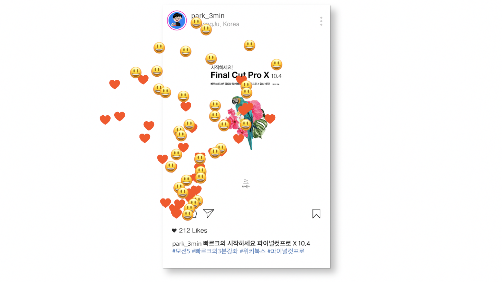- 책 : 312페이지
- 예제파일
- 9장 파티클로 만드는 모션그래픽/9-1 SNS에서 인기 많은 포스팅
- 9장 파티클로 만드는 모션그래픽/9-1 SNS에서 인기 많은 포스팅(완성작)
9.2 보케(Bokeh) 배경 만들기
- 책 : 319페이지
- 예제파일
- 9장 파티클로 만드는 모션그래픽/9-2 보케(Bokeh) 배경 만들기
- 9장 파티클로 만드는 모션그래픽/9-2 보케(Bokeh) 배경 만들기(완성작)
9.3 파티클 로고 만들기
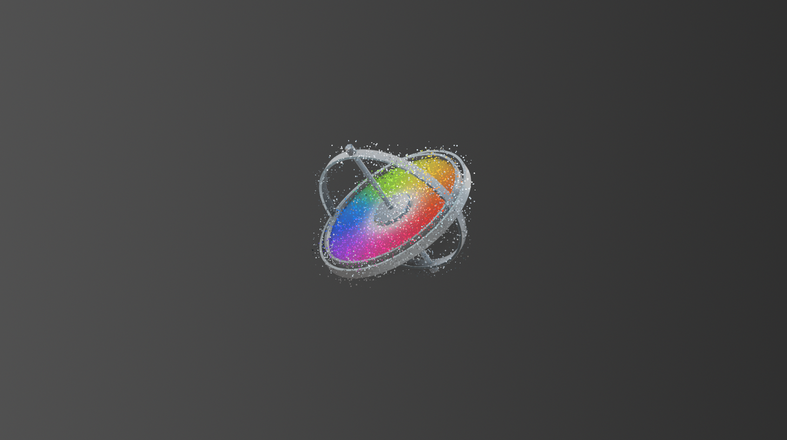- 책 : 332페이지
- 예제파일
- 9장 파티클로 만드는 모션그래픽/9-3 파티클 로고 만들기
- 9장 파티클로 만드는 모션그래픽/9-3 파티클 로고 만들길(완성작)
CHAPTER 10 / 레플리케이터로 만드는 모션그래픽
10.1 레플리케이터로 로고에 별 테두리 넣어보기
- 책 : 341페이지
- 예제파일
- 10장 레플리케이터로 만드는 모션그래픽/10-1 레플리케이터로 로고에 별 테두리 넣어보기
- 10장 레플리케이터로 만드는 모션그래픽/10-1 레플리케이터로 로고에 별 테두리 넣어보기(완성작)
10.2 롱 쉐도우(Long Shadow) 효과 만들기
- 책 : 348페이지
- 예제파일
- 10장 레플리케이터로 만드는 모션그래픽/10-2 롱 쉐도우 효과 만들어보기
- 10장 레플리케이터로 만드는 모션그래픽/10-2 롱 쉐도우 효과 만들어보기(완성작)
10.3 폭발(Explosion)하는 도형 애니메이션 만들기
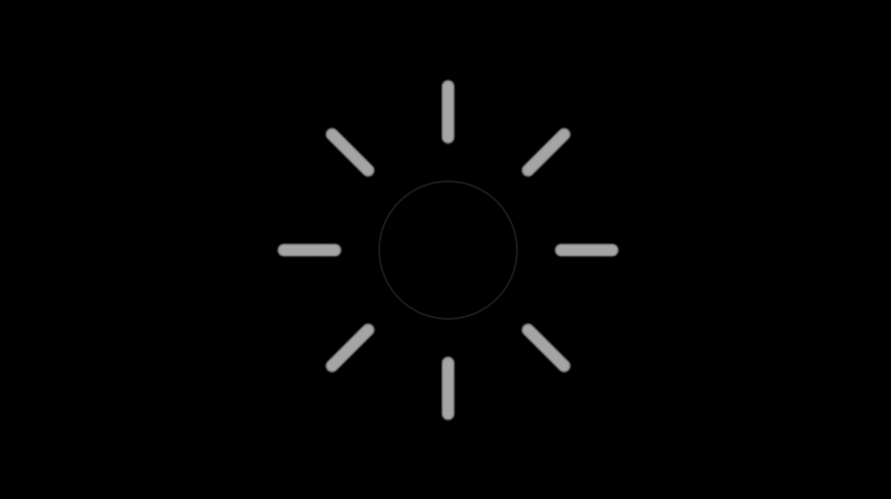- 책 : 356페이지
- 예제파일
- 10장 레플리케이터로 만드는 모션그래픽/10-3 폭발하는 도형 애니메이션 만들어보기
- 10장 레플리케이터로 만드는 모션그래픽/10-3 폭발하는 도형 애니메이션 만들어보기(완성작)
10.4 Sequence Replicator로 만드는 로딩 소스
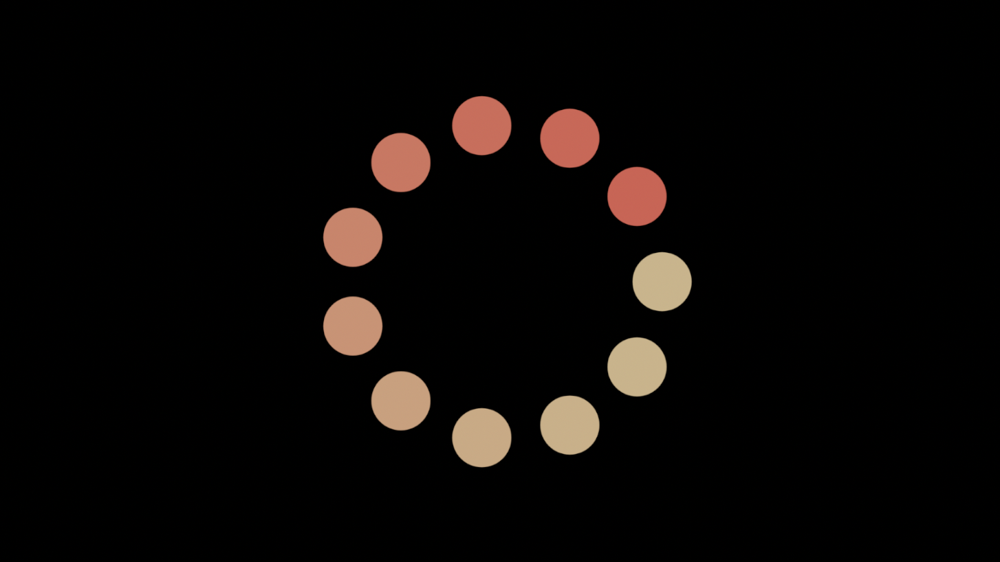- 책 : 365페이지
- 예제파일
- 10장 레플리케이터로 만드는 모션그래픽/10-4 로딩 소스
- 10장 레플리케이터로 만드는 모션그래픽/10-4 로딩 소스(완성작)
CHAPTER 11 / 3D 텍스트로 익혀보는 3D 레이어
11.1 화면에 3D 텍스트 입력하기
- 책 : 376페이지
- 예제파일
- 11장 3D 텍스트로 익혀보는 3D 레이어/11-1 3D 텍스트 화면에 입력하기
- 11장 3D 텍스트로 익혀보는 3D 레이어/11-1 3D 텍스트 화면에 입력하기(완성작)
11.2 3D 텍스트의 인스펙터 살펴보기
- 책 : 386페이지
- 예제파일
- 11장 3D 텍스트로 익혀보는 3D 레이어/11-2 3D 텍스트 인스펙터 알아보기
- 11장 3D 텍스트로 익혀보는 3D 레이어/11-2 3D 텍스트 인스펙터 알아보기(완성작)
11.3 넷플릭스 스타일의 인트로 만들기
- 책 : 393페이지
- 예제파일
- 11장 3D 텍스트로 익혀보는 3D 레이어/11-3 넷플릭스 스타일 인트로 영상
- 11장 3D 텍스트로 익혀보는 3D 레이어/11-3 넷플릭스 스타일 인트로 영상(완성작)
CHAPTER 12 / 3D 레이어와 카메라를 이용한 모션 그래픽
12.1 _ 사진을 이용한 입체적인 느낌 만들기
- 책 : 408페이지
- 예제파일
- 12장 3D 레이어와 카메라를 이용한 모션그래픽/12-1 example
- 12장 3D 레이어와 카메라를 이용한 모션그래픽/12-1 사진을 이용한 입체적인 느낌 만들기
12.2 여러 대의 카메라를 활용한 웹사이트 홍보 영상 만들기
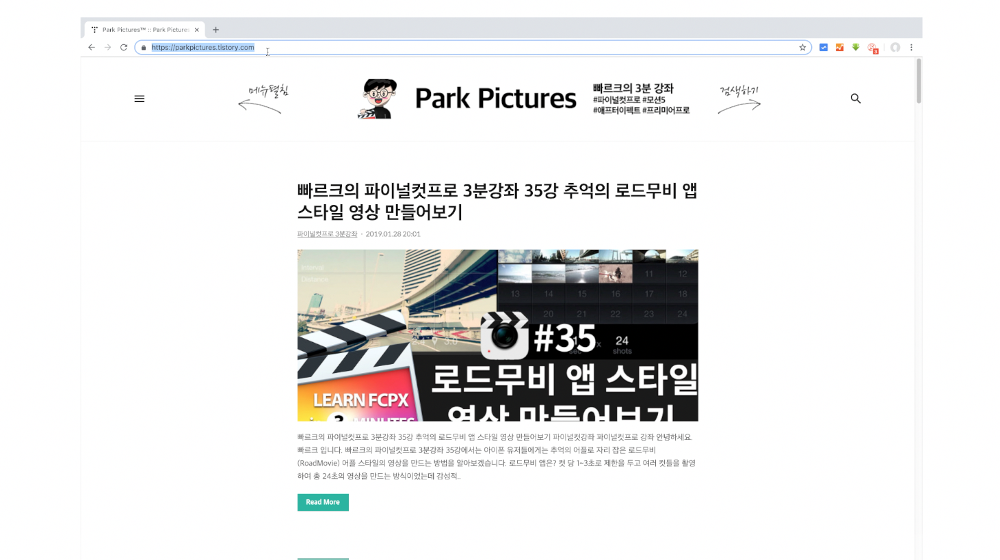- 책 : 427페이지
- 예제파일
- 12장 3D 레이어와 카메라를 이용한 모션그래픽/12-2 여러 대의 카메라를 활용한 웹사이트 홍보 영상
- 12장 3D 레이어와 카메라를 이용한 모션그래픽/12-2 여러 대의 카메라를 활용한 웹사이트 홍보 영상(완성작)
12.3 카메라 비헤이비어를 이용해 쉽게 카메라 제어하기
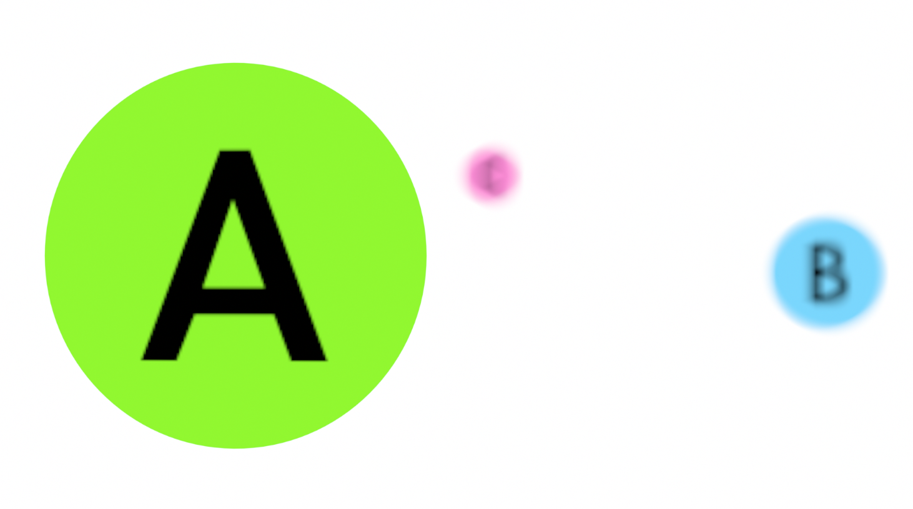- 책 : 438페이지
- 예제파일
- 12장 3D 레이어와 카메라를 이용한 모션그래픽/12-3 카메라 비헤이비어를 통한 카메라 제어/li>
- 12장 3D 레이어와 카메라를 이용한 모션그래픽/12-3 카메라 비헤이비어를 통한 카메라 제어(완성작)/li>
CHAPTER 13 / 360° 비디오로 만드는 VR 모션 그래픽
13.1 360° 프로젝트를 생성하고 영상 불러오기

- 책 : 457페이지
- 예제파일
- 13장 360도 비디오로 만드는 VR 모션그래픽/360_VR Master Series
13.2 360° 비디오 편집과 그래픽 추가
- 책 : 460페이지
- 예제파일
- 13장 360도 비디오로 만드는 VR 모션그래픽/13-2 360도 비디오 편집과 그래픽 추가
- 13장 360도 비디오로 만드는 VR 모션그래픽/13-2 360도 비디오 편집과 그래픽 추가(완성작)
13.3 파티클 이미터로 360° 비디오에 눈 내리는 효과 만들기
- 책 : 332페이지
- 예제파일
- 13장 360도 비디오로 만드는 VR 모션그래픽/13-3 360도 비디오에 파티클 이미터로 눈 내리는 효과 만들기
- 13장 360도 비디오로 만드는 VR 모션그래픽/13-3 360도 비디오에 파티클 이미터로 눈 내리는 효과 만들기(완성작)
CHAPTER 14 / 오디오를 활용한 모션 그래픽
14.1 기본적인 오디오 트랙 조정하기
- 책 : 486페이지
- 예제파일
- 14장 오디오를 활용한 모션그래픽/14-1 기본적인 오디오 트랙 조정하기
- 14장 오디오를 활용한 모션그래픽/14-1 기본적인 오디오 트랙 조정하기(완성본)
14.2 오디오 비헤이비어로 오디오 트랙 조정하기
- 책 : 495페이지
- 예제파일
- 14장 오디오를 활용한 모션그래픽/14-2 오디오 비헤이비어로 오디오 트랙 조정하기
- 14장 오디오를 활용한 모션그래픽/14-2 오디오 비헤이비어로 오디오 트랙 조정하기(완성본)
14.3 오디오 파라미터 비헤이비어로 오디오 비주얼라이저 만들기
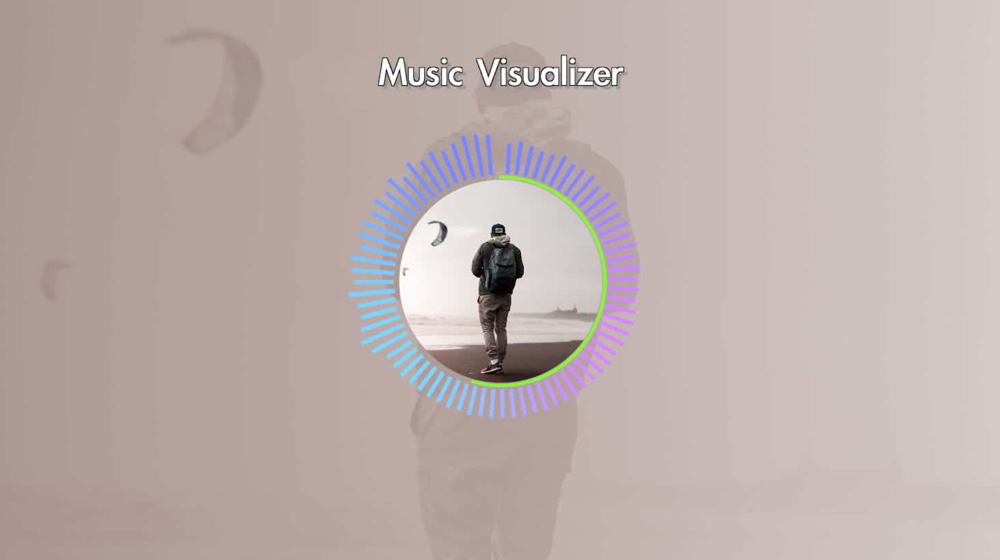- 책 : 499페이지
- 예제파일
- 14장 오디오를 활용한 모션그래픽/14-3 오디오 비주얼라이저ᅥ
- 14장 오디오를 활용한 모션그래픽/14-3 오디오 비주얼라이저(완성본)